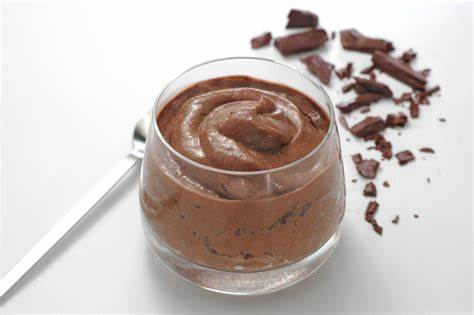

Chocolademousse
Een romig en decadent nagerecht dat elke chocoladeliefhebber zal bekoren.
Ingrediënten:
- 200 gram pure chocolade
- 4 eieren, gesplitst
- 50 gram suiker
- 250 ml slagroom
- Een snufje zout
- Optioneel: vanille-extract voor extra smaak
Bereidingswijze:
- Smelt de pure chocolade au bain-marie tot het volledig gesmolten en glad is.
- Klop de eidooiers en suiker in een aparte kom tot een luchtig mengsel.
- Klop de eiwitten met een snufje zout stijf in een andere kom.
- Klop de slagroom stijf in een derde kom.
- Giet de gesmolten chocolade voorzichtig bij het eidooiermengsel en meng goed.
- Vouw voorzichtig de opgeklopte eiwitten en slagroom door het chocolademengsel totdat alles goed is gemengd.
- Verdeel de chocolademousse over dessertglazen of serveerkommen.
- Laat de chocolademousse minstens 2 uur opstijven in de koelkast.

Tip: Garneer met vers fruit, gehakte noten of een toefje slagroom voor een extra feestelijke touch.